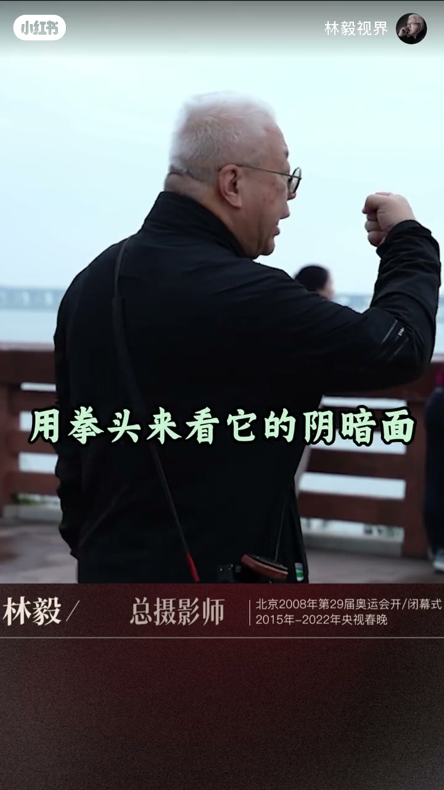
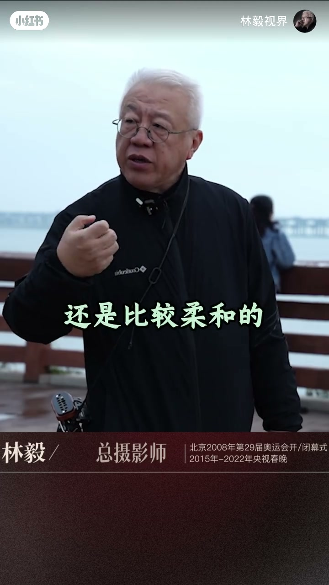
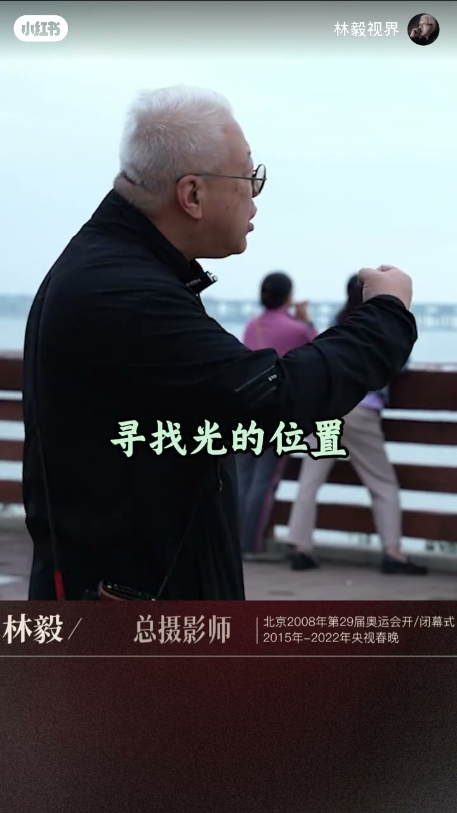
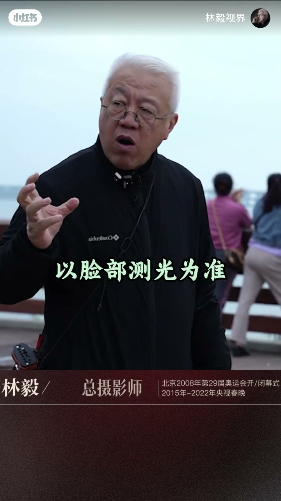
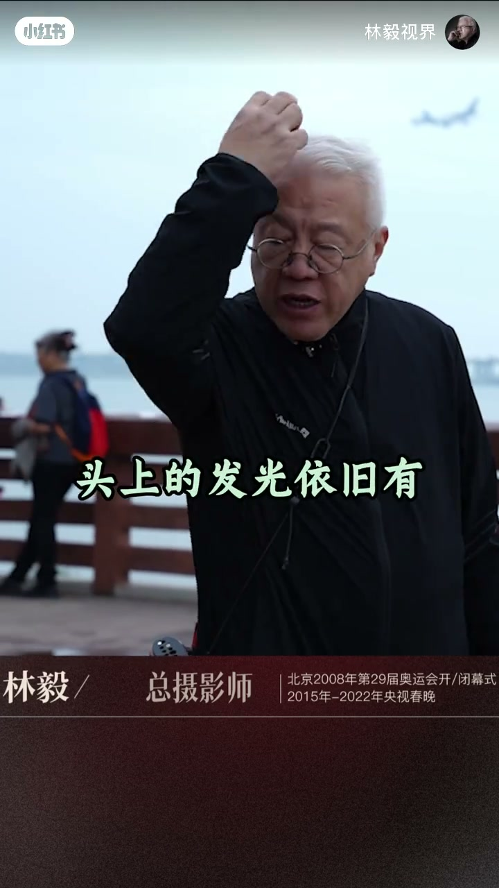
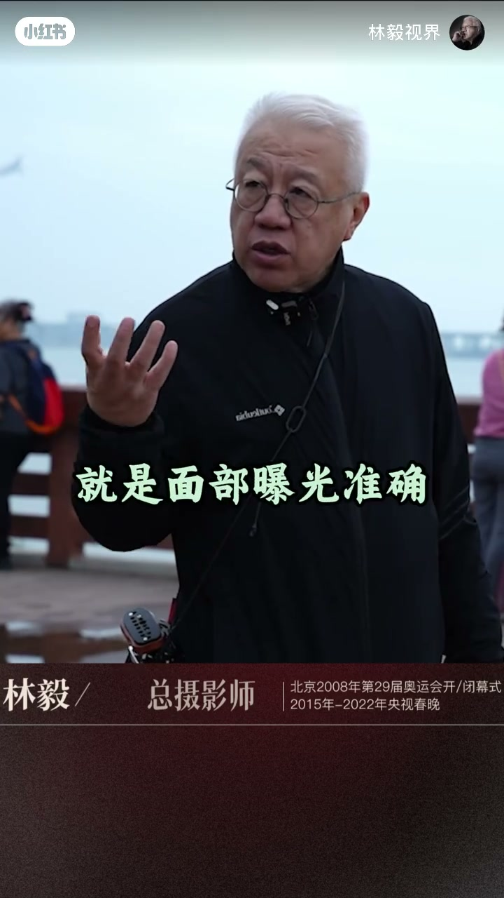

内容要点
「林毅视界」林毅（总摄影师）在水边阴天现场口述：阴雨天拍人像其实是不错的选择。他用拳头演示「阴暗面」——阴天仍有阴影，但对比没那么大、光质相对柔和；找光时以脸部测光为准。结尾提醒头顶发光依旧有、通透感不如晴天，所以更要盯住面部曝光准确。Whisper 前半段几乎空白，下列章节以烧录字幕与手势演示为主，并与末段口播对齐。
知识结构
阴雨天拍人像相对来说是不错的选择；现场为水边阴天漫射光。
阴天仍有阴暗面；用拳头看阴影——对比没那么大，依旧比较柔和。
拍摄人像找光时以脸部测光为准；头上发光还在但不够通透，关键是面部曝光准确。
把阴雨天当柔光棚用：阴影更软，不等于没有阴影；操作上脸部测光与曝光优先于追「通透感」。
00:00–00:08开场主张：阴雨天拍人像不错
字幕直接落在「阴雨天拍人像」。林毅站在水边栈道，背景是阴天与桥面，下三分之一条幅标明他是总摄影师（奥运会开闭幕式、央视春晚等履历）。Whisper 只听清开头半句「一雨天拍人像其实是一个不错的」——结合字幕与结尾完整句，可还原为：阴雨天拍人像其实是一个不错的选择。
他抬手比划，强调「相对来说」：不是说阴雨天万能，而是相对晴天硬光，阴天漫射更适合很多人像场景。视频未展开机型与参数，主张先落在「选光」而非「买机」。
00:08–00:22拳头看阴暗面：阴天也有阴影，但更柔和
字幕提醒「我们一定要注意」：阴天还是有阴暗面的。林毅侧过身，举起右拳，字幕写「用拳头来看它的阴暗面」「就像我以前说的」——这是摄影里常见的「拳手法」：看拳头背光侧有没有死黑、过渡是否发硬，用来判断现场光是硬是软。
接着字幕落到「所以阴暗面相对来说」「没那么大」「还是比较柔和的」。意思是：阴天不是「没有阴影」，而是阴影对比更小、过渡更软，因而更适合人像。本段 Whisper 为空，论证完全来自字幕与手势。


00:22–00:39找光与测光：以脸为准，曝光准确优先
话题转到「拍摄人像」「寻找光的位置」：林毅转身朝水面一侧，抬手示意光向。字幕明确「以脸部测光为准」——找光位时，先保证脸的亮度可读，而不是先追背景通透。
末段口播终于对齐字幕：他摸着头发说「头上的发光依旧有」「它不会那么通透」，所以要注意「面部曝光准确」。收束句与开场呼应：「阴雨天拍人像其实是一个不错的选择」。换言之，阴雨天仍有轮廓光，但整体通透感弱于晴天；可拍，但别用晴天的通透标准去硬套曝光。




详细文字转录
以下内容按 Whisper 原始分段完整呈现，可能包含识别误差。本片前半段口播几乎空白，章节叙述主要依据烧录字幕与手势演示。
-
一雨天拍人像其实是一个不错的
-
头上的发光依旧有
-
它不会那么通透
-
所以要注意就是面部曝光准确
-
一雨天拍人像其实是一个不错的选择